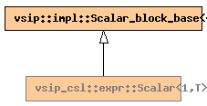

Global Namespace
Inheritance Tree
Inheritance Graph
Name Index
template <
typename
T>
class
vsip_csl
::Scalar<1,T>
File:
../../../vsip/core/expr/scalar_block.hpp
Scalar specialization for 1-dimension.
Primary template:
Scalar

-
Public Member functions
constructor
Scalar
(T
s
)
vsip::length_type
size
()
const
vsip::length_type
size
(
vsip::dimension_type
,
vsip::dimension_type
)
const
T
get
(
vsip::index_type
)
const
Generated on Sat Apr 17 11:14:16 2010 by
synopsis
(version 0.12)


 synopsis (version 0.12)
synopsis (version 0.12)